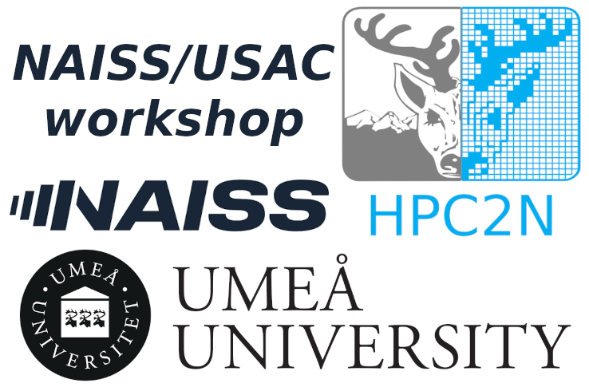

Slurm and module management
Given by NAISS staff at the HPC2N branch, for the USAC/NAISS meeting 26-27 August 2025.
Time and date for workshop
27 August 2025, 14:00 - 16:00.
Schedule
14:00 Introduction
14:05 Slurm at NAISS and HPC2N
15:00 Module management
15:45 Questions
Login info
- HPC2N - Kebnekaise
- SSH: kebnekaise.hpc2n.umu.se
- ThinLinc: kebnekaise-tl.hpc2n.umu.se
- From webbrowser: https://kebnekaise-tl.hpc2n.umu.se:300/
- OpenOnDemand: https://portal.hpc2n.umu.se
- NSC – Tetralith
- SSH: tetralith.pdc.kth.se
- ThinLinc: tetralith.pdc.kth.se
- 2FA required! https://www.nsc.liu.se/support/2fa/
- PDC – Dardel
- SSH: dardel.pdc.kth.se
- ThinLinc: dardel-vnc.nsc.kth.se
- SSH keys or kerberos needed! https://support.pdc.kth.se/doc/support/?section=/doc/support-docs/basics/quickstart
- C3SE - Alvis
- SSH: alvis1.c3se.chalmers.se
- Login/data transfer node alvis2.c3se.chalmers.se
- OpenOnDemand: https://alvis.c3se.chalmers.se
- ThinLinc and other ways to connect for remote graphics: https://www.c3se.chalmers.se/documentation/connecting/remote_graphics/